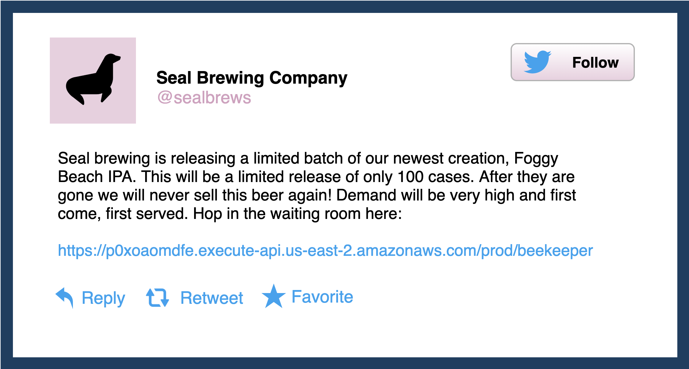
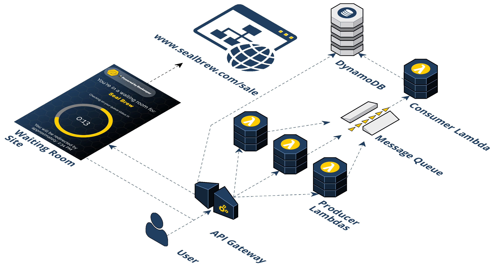

Case Study
1 Introduction and Use Case
Beekeeper is an open-sourced Backend as a Service (BaaS) built to handle bursty traffic from one-off events like a sale or promotion.
There is a difference between infrastructure needed for normal business activities and infrastructure needed for high traffic one-off events. An abrupt increase in website traffic can be the effect of many different causes. One such cause is an event like a Black Friday sale or similar promotion. If the existing infrastructure is unprepared for the spike in traffic it may result in a Denial of Service. The desired service may be unavailable until traffic declines to a manageable level.
1.1 Hypothetical
Let's look at a hypothetical. The Seal Brewing Company is planning a promotion to sell some seasonal, limited-run beers. Their promotion involves something more than a simple read of static content; there is something dynamic about it for each user, perhaps a requirement to log in or sign up before making a purchase. Seal Brewing knows when the event will occur and they're planning to spread the word via typical marketing channels like email, Facebook, Twitter, etc. The URL where this promotion will live is not known by the general public yet and they will not know until they get that email or see that post on Twitter. But when they do find out the URL a big burst of traffic may overwhelm the existing infrastructure and now this promotion has taken down the site by causing cascading failures in other components and disrupted normal business activities across Seal Brewing as a whole.
2 Potential Solutions
2.1 Scaling or Rebuilding Existing Infrastructure
Seal Brewing could explore increasing the capacity of its existing architecture. Now they can handle the bursty traffic for the promotion but the trade-offs could be substantial. First, they might have legacy infrastructure that can't be scaled. Perhaps certain components cannot scale vertically and perhaps others cannot be easily replicated or partitioned and scaled out.
Let's assume Seal Brewing can scale up its infrastructure somehow. Now they're capable of handling large traffic loads every day of the year but this is probably not the best return on investment. Seal Brewing is either buying more expensive hardware than they usually need (scaling vertically) or they're buying economical hardware but in larger quantities (scaling horizontally). The extra capacity is remaining unused most of the year.
What if they rebuild their functionality in a different way, perhaps on entirely new components with a cloud provider that can scale up and down with ease? Seal Brewing may be unwilling to spend the time and engineering resources required to rewrite its application.
Either way, Seal Brewing might be starting to think about a solution that can be tacked onto the legacy infrastructure. This is where a virtual waiting room fits in.
2.2 A Virtual Waiting Room
Beekeeper is an open-sourced Backend as a Service (BaaS) "virtual waiting room." In concept, a virtual waiting room is simply a public URL endpoint where users can be queued while they await their turn to go to the final destination URL where the actual promotion lives.
A virtual waiting room reduces the traffic sent to an endpoint below a set capacity over a period of time. The role of a waiting room is to “flatten the curve.”
2.2 How To Get a Virtual Waiting Room
A virtual waiting room seems like it fits the use case nicely, but how can Seal Brewing get one?
2.2.1 Buy a Third-Party Solution
As with any good problem, there is usually someone willing to sell a solution and virtual waiting rooms are no different. Queue-it, CrowdHandler, and Queue-Fair are all examples of third-party solutions for purchase.
The main trade-off of purchasing a paid solution is giving up some amount of control. Seal Brewing would not own the infrastructure and would be reliant on the third-party's implementation. Of course, purchasing a solution means they would be spending money as well, but this is not a material negative because building it yourself or even using an open-sourced solution may involve paying for more engineering hours.
2.2.2 Roll Your Own Waiting Room
We talked about it briefly but this option would take some amount of time and effort. This could be done with a cloud provider like Amazon's AWS. They have bespoke cloud services each with different specializations that can be created and linked up together. AWS even has information detailing one type of virtual waiting room and how one might go about using their services to create it:
Building your own virtual waiting room involves several considerations. First, it means thinking about the tradeoffs involved with a virtual waiting room. What features should it have? How have the challenges associated with said features been overcome by other products on the market like Queue-it? Second, if you're going to use a cloud provider like AWS, it means getting acquainted with AWS. Unfortunately, this is no small thing. Learning what AWS services exist and what they can accomplish takes time. Finally, those two pieces of thinking must be married together: now that you know what features the waiting room ought to have, and now that you know what's possible with AWS services, you need to design the infrastructure you want and deploy it.
If that still seems like a lot of work it's because it is. An open-sourced solution is not free either in terms of time commitment, but if done well it is cheaper.
3 Introducing Beekeeper
3.1 BaaS
As mentioned, Beekeeper is an open-sourced BaaS built for organizations that have one-off promotions involving a dynamic event, are constrained by existing infrastructure or time and effort, and prefer to own their solution rather than purchase off the shelf from a third-party. Let's look at where BaaS sits on a spectrum of possibilities:
Developers deploying an application to bare metal servers must account for every part of the software stack, all the way down to hardware selection. Infrastructure as a Service (IaaS) abstracts away hardware concerns, leaving developers responsible for setting up the entire runtime environment including the operating system.
With even more abstraction, but typically less control, is something like Backend as a Service, which abstracts away server-side implementation entirely and simply provides an API to interact with the service. An example of a classic BaaS would be Heroku. At this end, most choices are made by the providers of the service; developers have little, if any, control over implementation details.
Beekeeper is BaaS because out of the box all the decisions are made and Seal Brewing only has to interact with the CLI tool. It is worth noting that the Beekeeper infrastructure is spun up on Seal Brewing's AWS account and they, therefore, have complete control to make changes to the implementation.
Before we go further into the solution it's probably worthwhile to refresh our memory of the problem and make clear a few more things.
3.2 Revisiting the Problem
Seal Brewing is going to hold a one-off event at a pre-determined time and URL that they will make the general public aware of via channels like email or social media. When the public finds out about the event they might flood the URL all at once. Somehow Beekeeper has to intercept this traffic. The one-off nature of the use case is what allows this to happen. The use case does not involve intercepting all of Seal Brewing's traffic. The waiting room URL can be put in these marketing emails and on these social media posts.
It is worth noting that a virtual waiting room is not needed for all types of bursty traffic problems. Simple reads and writes can be handled by placing content on a CDN and writing to a separate database that can handle the traffic.
A virtual waiting room solution only comes into play when the users must be allowed to continue to the final destination because the action they need to take is dynamic. Perhaps this means completing a purchase, itself which means having to log in with some credentials, both of which involve talking to existing legacy infrastructure that we are trying to avoid modifying or rebuilding.
3.3 The Beekeeper Solution
Beekeeper is an NPM package used to automate an infrastructure built on top of AWS services. We'll get into the basics of how you use the NPM package soon but for now, let's see what Seal Brewing gets with Beekeeper.
Beekeeper consists of five (5) distinct AWS services: API Gateway, S3, Lambda, SQS, and DynamoDB. We'll discuss all this in more detail soon, but let's go through the high-level flow first:
Step 1: A user visits a promotion URL. Seal Brewing is going to run its promotional sale. They'll install and deploy the Beekeeper NPM package, provide a couple of pieces of information such as the final destination URL that the waiting room should forward to and at what rate. After deploying Beekeeper, Seal Brewing will get a generated URL to use for their promotion.
Step 2: Visiting the promotion URL hits the API Gateway. When the user clicks the URL, their browser is sending a GET request for a resource. That HTTP request to an endpoint is handled by the API Gateway and that endpoint triggers a Lambda. We call this the "/beekeeper" endpoint.
Step 3: The Producer Lambda is triggered. A Lambda is a container that AWS spins up with your specified runtime environment, dependencies, and code in it. It’s a serverless compute service that runs code without having to provision resources or manage servers. The logic in the Producer Lambda does a few things. It first checks if the incoming request headers already have our cookie. If the incoming request does not have a cookie, a few additional steps take place. First, the Lambda generates a random token value. Second, the token is placed in a queue (SQS). Third, a cookie is set on the client with this token in it. Fourth, a response header is set that tells the browser when it receives the HTTP response from the API Gateway to redirect the client to the waiting room URL. This waiting room URL consists of static assets; an HTML file with JavaScript and CSS held in an AWS S3 bucket. We'll come back to this waiting room in the S3 bucket, but for now, let's continue by talking about what happens after the token gets put in the queue.
Step 4: The Consumer Lambda pulls from the SQS queue. A grouping of Consumer Lambdas work to pull these tokens off the queue at a specific rate. The Consumer Lambdas take tokens off the queue and write them to the DynamoDB. This is how Beekeeper controls the rate of traffic flow.
Step 5: The token is written to the DynamoDB. Now that the Consumer Lambda has pulled off a given token it writes an object to the DynamoDB containing the token, the current date, and a property indicating with a boolean value whether this token is allowed to redirect to the waiting room.
Step 6: The waiting room in the S3 bucket polls the API Gateway. The waiting room has client-side JavaScript sending AJAX requests to an endpoint on the API Gateway every 20 seconds. We call this the "/polling" endpoint. Instead of triggering a Lambda, the API Gateway pulls off the cookie from the incoming request to get the token and directly queries the DynamoDB to check if the token is in there.
Step 7: Query DynamoDB to see if the token is in there yet. This is how we decide when to let a user get redirected from the waiting room to the final destination. If the token is in the database the API Gateway responds with an object with two properties "allow": "true" and "origin": "[https://www.sealbrewing.com]". The browser checks the "allow" property and if it is truthy the browser redirects the user to the URL provided in the "origin" property. If the token is not in the database, the API Gateway responds with an object with one property, "allow": "false" and the polling continues every 20 seconds while the user waits.
Step 8 (Optional): The final destination performs a check to make sure the user didn't skip the waiting room. Without this step, notice how a user could technically skip the waiting room. Here's how it might happen: one user clicks on the promotional link, goes through the whole process outlined above, and makes it to the final destination. Now they know the URL of the final endpoint where the promotion is. They could share that URL on Twitter or Reddit, for example, and now others could go there directly. Note that Seal Brewing probably does not have to be overly concerned with this potential problem. The sharer would have to be influential and the event long-lived such that other users could actually find out about that shared URL. In any case, to prevent users from circumventing the waiting room we have a third endpoint on the API Gateway that we call the "/client" endpoint. If Seal Brewing wants, they can add a simple AJAX request to their frontend JavaScript that will send a GET request to the "/client" endpoint. The browser would send along the cookie with such a request. The logic works the same as in the "/polling" route in Step 7. A direct query of the database occurs and Seal Brewing can expect a JSON object in response with a property "allow" that contains a truthy or falsey value.
3.2 Encryption
In section 2.3, we mentioned that encryption alone isn't a complete solution. But when you combine it with centralization, you're well on the way. Your secrets should be encrypted client-side, meaning they never leave your device before they’re encrypted. They should remain encrypted in transit and at rest too, so they’re never seen nor persisted in plaintext. That includes encryption in communication channels, temporary stops, and persistent storage. Each step adds a layer of security, as illustrated below.

3.3 Secrets managers
A secrets manager is a system that helps you securely store and manage your secrets. Secrets managers are inherently centralized and invariably use encryption in some way. Beyond that, they vary in the use case they are targeted for and in the features they offer.
How to choose a secrets manager
In recent years, a number of secrets management solutions have popped up. There are several things to consider when you’re choosing a secrets manager. First, a secrets manager must keep your secrets safe. To do that, it should encrypt your secrets. Second, how does it accommodate multiple users? How does it let you share access safely? Third, you need to know how to actually use it in your applications. How do applications actually get secrets? You might have to significantly adjust your workflow depending on the solution you pick.
How secrets managers work with your application
Let’s zoom in on that last question: how applications get secrets. And that’s done in one of two ways: either your application has to fetch the secrets it needs—so you have to write more application code—or your application is run in a certain context such that it already has the secrets it needs.
- A secrets manager might require you to make an API call within your code to fetch secrets from it, in which case it’s more of a decoupled and passive component.
- On the other hand, your application might also be run with the secrets it needs already available. For example, if you use an orchestration service, such as Puppet or Docker Swarm, there will likely be a built-in way of specifying secrets, which will then be made available in the environment your application code executes in.
Another approach that works the second way is what the secrets manager SecretHub does. SecretHub runs your application as a child process and injects the secrets into the environment of that process. This gives SecretHub some level of control, as it can monitor the standard output and standard error streams of your application.
3.4 Existing solutions
Vault by Hashicorp
Vault is the most popular commercial solution. It's highly flexible and extensible. For example, it integrates with the storage backend and identity provider of your choice, and it can integrate with a broad array of plugins. But Vault is widely regarded as complex, and can be overkill for many teams. Their own docs admit this, stating "Vault is a complex system that has many different pieces." [6] It is probably the best choice if you need some of the features that only Vault offers, and if your team or organization has the expertise and bandwidth to manage the Vault beast.
Other commercial solutions
Although Vault is dominant, there are other players on the market.
- Doppler is an early YC startup that launched in late 2020 whose focus is making it "super easy" to manage secrets. One thing that may give users pause is that secrets are sent plaintext to Doppler.
- EnvKey has a different security model—it takes a "zero trust" approach and encrypts secrets client-side before they are sent over the network. Like Doppler, EnvKey is easy to get started with, but it is not as feature-rich: for example, it lacks secret versioning and the ability to segregate permissions on a per-project basis.
- SecretHub has client-side encryption and is feature-rich, but it is complex. SecretHub also redacts secrets from standard output and standard error, which helps to prevent secrets being visible in logs locally and/or in any logs that might be shipped off to third parties.
Ultimately, all commercial solutions are third parties that you have to trust. Many teams prefer using open-source software for a variety of reasons, and when it comes to secrets management, there is one strong reason to: you have full control over the system.
Open-source solutions
There are open-source solutions out there, ranging from utility-like tools that tend to require you do a lot to get up and running, to more complete solutions with UIs and built-in access control. The latter, though, tend to be targeted toward specific use cases. For example, Confidant, which was developed by Lyft in 2015, has a nice UI and intuitive access control, but it is Docker-centric and AWS-centric; it assumes you are using Docker and AWS roles for authorization. An example of a more utility-like tool is credstash, which, like Confidant, uses AWS under the hood. But it has limited functionality. For example, it doesn't offer logs or the ability to segregate secrets by project and environment. It also requires a fair bit of setup. For example, you need to have an AWS KMS key and your developers all need AWS credentials.
AWS Secrets Manager
AWS Secrets Manager came out in 2018, and if you're AWS-native, it may be perfect for your team. However, if your team doesn't already use AWS services, it's not exactly a plug-and-play solution. Navigating the AWS ecosystem presents a steep learning curve in itself, and Secrets Manager does not come with access control set up for you out of the box.
Summary of existing solutions
Existing solutions can be categorized in very broad strokes as ‘lightweight’, or ‘heavyweight’, where lightweight emphasizes ease of quickly getting started using it, and heavyweight emphasizes features.

Even in the lightweight category, there’s some diversity. For example Doppler emphasizes usability, while EnvKey emphasizes security. The heavyweight ones, such as SecretHub and Vault, tend to offer more features but at the cost of greater complexity. There are also several other open-source solutions, but they either have a lot of overhead or are built for a niche use case.
3.5 A new solution
While the solutions above provide some helpful ways to manage application secrets, we found they weren’t optimal for small teams to hit the ground running with. Because of this, we built Haven.

4 Introducing Haven
Haven is an open-source secrets manager built with small teams and ease of use in mind. It protects application secrets using best practices, plus it’s easy to integrate and use in your applications.
After we identified the components we’d need to build a good secrets manager, we realized AWS had trusted and long-standing services for some crucial components.
- Since secrets need to be encrypted and decrypted with an encryption key and "successful key management is critical to the security of a cryptosystem" (Wikipedia), we opted to use the highly vetted AWS Key Management Service (KMS). This is the only AWS service Haven uses that does not have a free tier: KMS costs $1 per month per key.
- Authentication and authorization is another crucial piece, and we chose AWS Identity and Access Management (IAM). Every time an entity makes a request to a non-public AWS resource, the request goes through IAM first. Using IAM as the gatekeeper for all storage and encryption logic meant that we could ensure only entities we authorized could read secrets, write secrets, and so on.
- Since we wanted IAM to be the gatekeeper for storage, we also use AWS for storage, and we had several storage options to choose from. Haven sits in the critical path of your application being served, so low latency and high availability were important. (On the other hand, scalability was not a concern for us.) We chose Amazon DynamoDB because it has good documentation, high availability, and single-digit-milliseconds latency.
Although we use AWS under the hood, you don't need cloud expertise to productively use Haven. The Haven Admin needs an AWS account—that’s it.
4.1 How does Haven work?
The architecture of a Haven instance can be split up into two components: the client side and the corresponding AWS infrastructure side. On the client side, each user—be it a Haven Admin, a developer or an application server—uses the Haven application to interact with the instance’s secrets. All of these users have Haven installed on their personal machines and are using Haven to interact with the same AWS infrastructure, albeit with varying levels of permissions.

To showcase how Haven works, let’s walk through a common workflow, including how you set up Haven as an Admin, how you add a project to Haven, how you add developers to your Haven projects, and how you run your applications with Haven.
Setting up Haven
The Haven Admin is the person responsible for creating every project and every user, assigning permissions to the users, and reviewing access logs.
Haven offers both a UI and CLI, which share the same Haven Core
package under the hood. To get started with the Haven CLI, you
install the haven-secrets-cli package from npm. After installing the
npm package, you run haven setup, which assigns you as
a Haven Admin.
During setup, Haven connects to your AWS account and provisions the backend resources for creating projects and their environments, adding users, setting permissions, and adding and updating secrets. Note that your AWS account is the only place your secrets will ever be stored with Haven—there is no external Haven server with your secrets.

Haven provisions a file called havenAccountFile, which contains your Haven credentials. All you need to do is place this havenAccountFile in your home directory.
Integrating your projects
Let’s say you have an application called BlueJay that you want to
integrate with Haven. Note that as the Haven Admin, you are the only
person who will be able to create or delete projects. After you run
haven createProject BlueJay, Haven provisions a
DynamoDB table and set of IAM permission groups for your application
BlueJay.

Next, you add all your secrets for the BlueJay project.

Your project BlueJay is now integrated with Haven.
Adding developers to Haven projects

When you create a user, Haven provisions temporary user credentials. They’re saved to your computer, and you’ll then send this file to the intended user.

Each developer has to install the haven-secrets-cli package from npm on their personal computer. Let’s switch over to the new user’s point of view, where we see that they’ve received the temporary credentials.

The developer puts this file in their home directory. Note that
Haven users other than the admin don't need an AWS account since
they'll be connecting to the Haven Admin’s AWS account. Initially,
the developer can’t interact with any projects and secrets. The
developer must run haven userSetup on their computer
after placing their havenAccountFile in their home directory. Haven
will then fetch their permanent credentials.

They are now able to start interacting with Haven based on the
permissions you give to them. You’re able to grant them read and/or
write permissions for secrets on a per-project, per-environment
basis. (Granting permissions is an admin-only capability.) Depending
on their permissions, they are able to create, update, and/or read
secrets, and also run the application locally using
haven run. Below, we depict the developer being able to
fetch a secret that you, the admin, has stored.

If the dev is not authorized to that particular secret, they’re denied access:

Using Haven in your application
Finally, let’s look at how you can use Haven in your applications.
We assume you run your application on a server, or rather, in an
environment that has a filesystem. The Haven Admin creates a “server
user” under this AWS account, which is really just another Haven
user like developers are. As we saw in the previous section, the
Haven Admin receives a havenAccountFile for the new server user. The
Haven Admin SSHs into the server where your application is run and
installs Haven globally or as a dependency in your project, as well
as place the havenAccountFile in the home directory of the
operating-system user that the application will run from. Then, the
Haven Admin will run haven userSetup, just as the
developer did in the previous section.
This server is now able to start interacting with Haven based on the
permissions you give it. You can run your application with
haven run.

5 Building Haven
In section 3.2, we noted that there are three questions you should ask about any secrets manager. The decisions we made and the challenges we faced in building Haven can be described pretty well by answering those questions:
- How does it keep your secrets safe?
- How does it let you share access safely?
- How do applications actually get secrets?
5.1 Keeping your secrets safe
Solving the “master key” problem
The very notion of encrypting your secrets has an inherent problem: what do you do with the encryption key? Assume you use symmetric encryption, so the encryption key both encrypts and decrypts your secrets. But then that encryption key is itself a secret—and a particularly sensitive one, since it can unlock all of your secrets. You might try to encrypt that key with another key, but that would be yet another key that you have to encrypt.

One way to solve this problem is to have a trusted third-party service store an encryption key that you don’t have physical access to. Instead, you dictate who has permissions to use it to perform encryption and decryption operations. For Haven, that trusted third-party service is the battle-tested AWS Key Management Service (KMS). We use KMS to store this key, which we’ll call a “master key”, and limit encryption/decryption access to it via AWS IAM policies. We don’t need to worry about safely storing this master key since AWS handles that. Now let’s see why “master key” is an appropriate name (hint: it decrypts other encryption keys).
Key wrapping
Key wrapping is an encryption best practice and refers to the technique of using two or more layers of keys to protect your data. It involves generating a unique data encryption key for each secret and encrypting the secret using that encryption key. Then the data encryption key is encrypted by the master encryption key. The encrypted key and encrypted secret are then stored until decrypted later. To decrypt your data, you perform this process in reverse: decrypting the data encryption key with the master key and then using the data encryption key to decrypt your secret data. Key wrapping is also sometimes called envelope encryption.

Key wrapping has two advantages: first, it’s harder to brute force the encrypted data since each is encrypted using a different key; second, you reduce the attack surface area, because the master key never sees your plaintext data—only plaintext data encryption keys—so an attacker would need access to both your secrets storage and the master key (and in addition, there’s one less instance of your plaintext secrets traveling along the wire). You may be wondering what you do with these encrypted data encryption keys: you store them alongside the encrypted secret itself, often in the same database row.
Implementing encryption best practices
It's a common saying in software that you shouldn't "roll your own crypto"—you should use a vetted cryptographic library. We use the AWS Encryption SDK, a client-side encryption library, because it adheres to cryptography best practices like key wrapping. The AWS Encryption SDK requires a master key, so Haven uses the master key in AWS KMS that it creates for you in initial setup.
Haven follows the best practices of encrypting your secrets client-side, in transit, and at rest. When you add or update a secret, it's first encrypted on the client using the SDK and then sent encrypted in transit via TLS to be stored on Amazon DynamoDB, where it is encrypted at rest.
Our encryption scheme as a whole

The diagram above shows Haven’s encryption scheme from start to finish. First, to encrypt a datum, a unique data encryption key is generated and is used to encrypt the secret on the client side as seen in the top right. Then, as shown in the top left, that data encryption key is encrypted using the singular master key stored in KMS. Both of these encrypted pieces of information are encrypted in transit via TLS and sent to DynamoDB to be stored alongside each other as shown in the bottom of the diagram. Thus we can see that Haven encrypts your data client side, in transit and at rest up on DynamoDB.
Storing and fetching secrets
As we see below, Haven first makes a request to the AWS encryption SDK library to encrypt a secret. The SDK checks that the caller has the IAM permission to encrypt, and if so, generates a data encryption key, encrypts the secret value with it, and then encrypts the data encryption key with the master key. Then, Haven takes this encrypted data, and (if the user has permission) stores it in the database. Haven also stores the secret’s name, version number and whether the secret is flagged, in that same row.

When you fetch a secret, Haven first fetches the encrypted secret from the database, then decrypts it using the Encryption SDK.

Running the UI web application on localhost

We chose to run the Admin/Developer UI Dashboard from localhost in order to avoid the security issues that any application running on the public web faces. [7] We were inspired by EnvKey, whose FAQ states:
Unfortunately, it's still not possible to implement true zero-knowledge end-to-end encryption on the web. Apart from a fundamental chicken-and-egg problem when it comes to server trust, there's no way to protect against all those ever-so-convenient browser extensions that so many folks have given full-page permissions. [8]
A second reason we run the UI app locally is to make it clear that Haven does not have a backend “Haven” server, so we could not snoop on your secrets even if we wanted to.
5.2 Sharing access safely
Supporting multi-project teams with fine-grained permissions
Enforcing the principle of least privilege is important, and Haven makes this easy by limiting access along three dimensions: by project, environment, and by action, where an action is read-only or read-write.

Above, we see Sue has read-write access to secrets for project BlueJay in the Dev environment.
Mitigating the "initial credentials" problem
Creating credentials for a new Haven user means creating a new secret. After all, those Haven credentials may permit the ability to read and write secrets! So, how can we ensure that we don't cause our own secret sprawl?
Temporary credentials
Our solution was to create temporary credentials good for only one hour. The credentials don’t have permissions to do anything except request permanent credentials, so the user must ‘change their password’ before they can do anything else. We use an AWS Lambda function to enforce the one-hour limit. If someone doesn’t use their temporary credentials within an hour, the Haven Admin will need to create a new user.
The flow is illustrated below: first, the Haven Admin adds a user,
either in the UI or the CLI, then Haven downloads a file with
temporary credentials and the Haven Admin sends this to the new
user. Second, the new user places the Haven file in their home
directory and runs haven userSetup. Haven invokes a
lambda using those temporary credentials, the lambda checks if
they’re still valid, and if so, returns permanent credentials which
Haven then puts into the user’s haven file. At this point, the new
user would need to tell the Haven Admin that they set up their
account, so that the Haven Admin could add them to projects and
environments.

Revocation of permissions and flagging of secrets
The Haven Admin can easily revoke any permission for any user or even delete users. When a user's permission to some secrets is revoked, the secrets are automatically flagged, and the next time the Haven Admin or a developer uses the UI Dashboard, they will see a red flag next to the secret, indicating they should rotate (change) that secret.
5.3 Getting secrets to your applications
Getting secrets to your application should not itself contribute to your secret sprawl, and it should be as easy as possible to do. We settled on an approach similar to what the existing secrets manager SecretHub does.
Secrets injection
SecretHub is a complex secrets manager and there are many ways of using it, but in one way of using SecretHub with your application, SecretHub runs your application as a child process and injects the application’s secrets into that child process as environment variables. [9]
Haven works the same way. This has three benefits. First, your
application’s secrets aren't stored in a file somewhere on the
application server (so no secret sprawl in that regard). Second, due
to the nature of child processes, Haven can redact any secrets
leaking out on standard output or standard error (we explain how shortly). Finally,
this approach makes it easy for the developer: they can simply
install the Haven package and change their application’s start
command to include haven run.
Why environment variables?
There are pros and cons of using environment variables. A weakness of environment variables is the environment can get leaked or inherited: a logging or debugging tool may dump the environment, or a malicious child process may inherit and read your secrets. [10] But environment variables do have one major security advantage: they die when their process dies. Any environment variables you set for that application are for that process and will disappear once your application stops running—leaving no trace behind, unlike a file. Besides the security advantage, environment variables also have two major pragmatic advantages: 1) they’re language and OS agnostic, and 2) many developers are familiar with them.
When we surveyed existing solutions, we noticed that most dedicated secrets managers either permit you to store secrets in environment variables if you want to (e.g. Vault) or just always put secrets into environment variables (e.g. EnvKey). And outside of dedicated secrets managers, if you're using Docker's or Kubernetes's built-in ways of handling secrets, you'll be setting them as environment variables. Since centralization and encryption are arguably far more important for security than whether you use environment variables, and since using them is standard, we decided to use environment variables.
Redacting secrets from an application's standard output and standard error
We wanted to mitigate that risk of environment variables showing up in logs from processes that dump the whole environment. We did so by spawning your application as a child process.
Spawning a child process
A process can simply be thought of as a running program. When you
run your application, it runs in a process. The Node.js runtime allows spinning out sub-processes called "child" processes, and Haven uses the spawn method from Node's built-in child_process library. When using the spawn method, you specify the
program you want to run and that program is run as a child process.
The standard I/O of the child process is piped to and from the parent
process: standard input is piped in to the child from the parent, and standard output
and standard error are piped out from the child to the parent.

This is what allows us to provide a simple wrapper for your application, making for an easy-to-use secrets manager, as well as what lets us intercept any logging of secrets on standard output and standard error and redact them for extra security.
How it works with your application
So how does this child process technique fit into the bigger
picture? In the example shown below, note that todos is the
Haven project, prod is the environment and nodemon todos.js is
the command that is run by Haven.

Haven fetches the secrets for the project/environment combination, then spawns a child process via the command you passed to Haven using the spawn method from the Node child process library. The secrets are injected into this child process as environment variables, making them available for the application. Then, as the application runs, Haven intercepts both standard output and standard error, redacts logged secrets, and logs the redacted result.

6 Future Work
And that's Haven! We're an open-source secrets manager for small teams, with a UI and CLI for easy team management. For our next steps, we plan to add the ability for users to add secrets in bulk from JSON and YAML files. We also plan to add an email integration to make new user creation even smoother.
In addition, we plan to support the option for per-secret access controls (rather than per-project access controls), as well as provide direct plug-ins and integrations with select credential providers to support dynamic secrets (i.e., one-time use credentials).
7 References
[1] https://www.hashicorp.com/resources/introduction-vault-whiteboard-armon-dadgar
[2] https://www.ndss-symposium.org/wp-content/uploads/2019/02/ndss2019_04B-3_Meli_paper.pdf
[3] https://www.digitalocean.com/blog/update-on-the-april-5th-2017-outage/
[4] https://www.capitalone.com/facts2019/
[5] https://12factor.net/config
[6] https://www.vaultproject.io/docs/internals/architecture
[6] https://en.wikipedia.org/wiki/Web_application_security#Security_threats
[8] https://www.envkey.com/faq/
[9] https://secrethub.io/docs/guides/environment-variables/
[10] https://www.honeybadger.io/blog/securing-environment-variables/
The Team